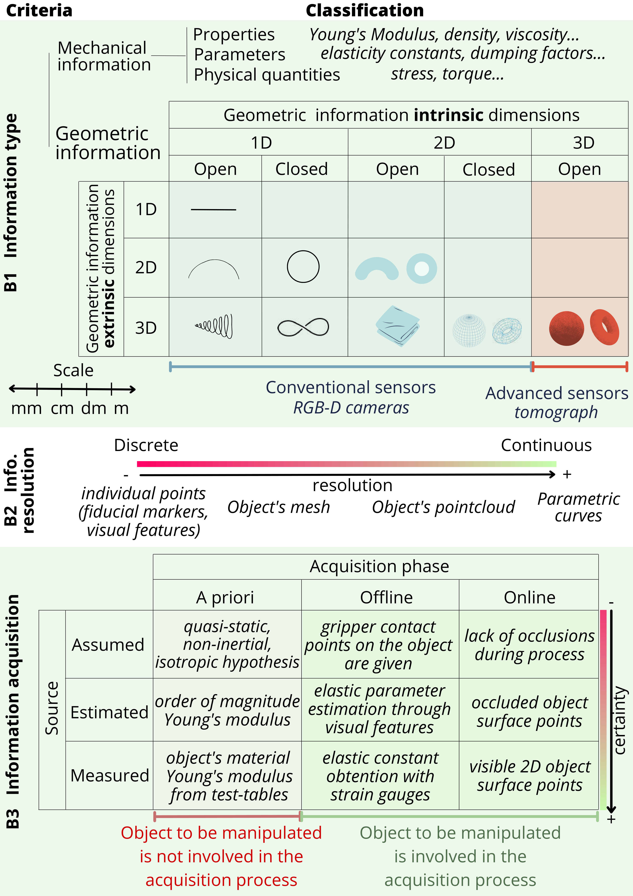

2.2 Available object information classification

Table 2. Criteria in Sec. IIB applied to several shape control approaches. Abbreviations: geom. (geometry), surf. (surface), physic. (physical), param. (parameter), def. (deformation), estim. (estimated), meas. (measured) and assumpt. (assumption).
| Method | B1 Information type | B2 Information resolution | B3 Information acquisition |
|---|---|---|---|
| (Aranda et al., 2020) | Geom.: 2D open surf. embedded in 3D | Medium (discrete 3D mesh) | Estim. online, visual featuers with RGB camera. |
| (Shetab-Bushehri et al., 2022) | Geom.: 2D open surf. embedded in 3D | Medium (discrete 3D mesh) | Estim. online, visual featuers with RGB camera. |
| (Qi et al., 2022) | Geom.: 2D open surf. embedded in 3D | High (1D closed contour) | Meas. online with monocular RGB camera |
| (Cui et al., 2020) | Geom.: 2D open surf. embedded in 3D | Low (few discrete 3D marker points) | - |
| (J. Zhu et al., 2021) | Geom.: 2D open surf. embedded in 3D | High (1D open/closed contour) | Meas. online with RGBD camera. |
| (A. Cherubini et al., 2020) | Geom.: 3D volume | High (3D point cloud) | Meas. online with RGB-D camera. |
| (López-Nicolás et al., 2020) | Geom.: 2D open surf. embedded in 2D | High (1D closed contour) | - |
| (Hu et al., 2019) | Geom.: 3D volume | High (3D point cloud) | Meas. online with RGBD camera. |
| (Cuiral-Zueco and López-Nicolás, 2021) | Geom.: 2D open surf. embedded in 3D | High (3D point cloud) | Meas. online with RGBD camera. Isotropy assumpt. |
| (Cuiral-Zueco et al., 2023) | Geom.: 2D open surf. embedded in 3D | High (1D closed contour) | Meas. online with RGB camera |
| (Cuiral-Zueco and López-Nicolás, 2024) | Geom.: 2D open or closed surf. embedded in 3D | High (3D point cloud) | Meas. online with RGBD camera. Isotropy assumpt. |
| (Caporali et al., 2024) | Geom.: 1D open embedded in 3D; Physic.: def. param. | High (3D point cloud) | Geom.: Meas. online, 3D scanner; Physic.: estim. online |
| (Deng et al., 2024) | Geom.: 3D volumetric (dense) | Medium (3D tetrahedral mesh) | Mesh estim. online from few laser-reflective markers |
In this section we classify the available object information with respect to three criteria: information type, information resolution and information acquisition (see Fig. 3 and Table 2). We do not centre this analysis on the available sensor types as the same type of information can be acquired with different sensors. Rather, we focus on the elements that constitute the available information for the analysis of the object's behaviour (Sec. 2.1) and the definition of the shape error (Sec. 2.3).